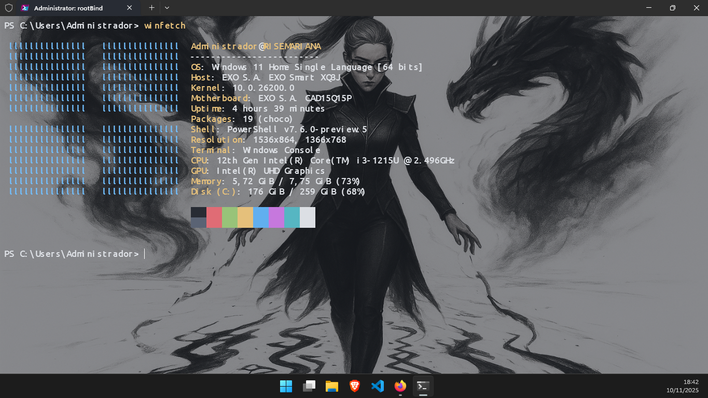
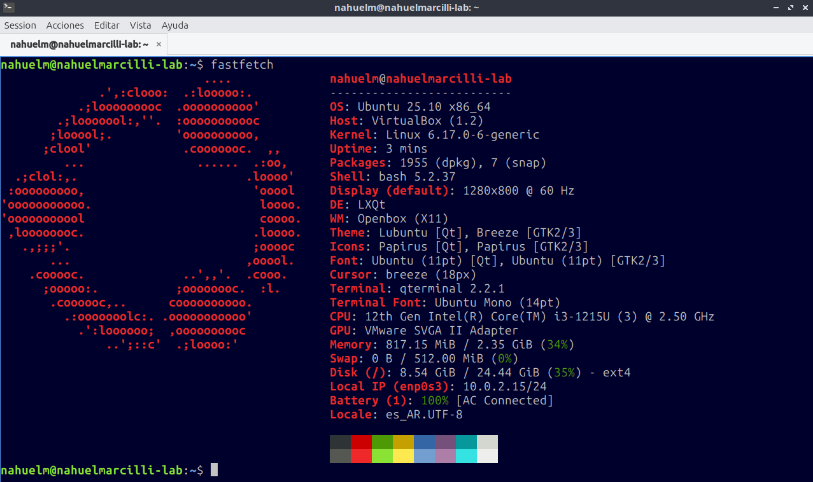

Actividad S13-A1: Gestión de usuarios y grupos en Ubuntu Linux
Alumno: Nahuel Marcilli
</> Documentado con HTML y CSS
Se utilizó Windows 11 como sistema operativo principal.
La práctica se desarrolló sobre una máquina virtual con Lubuntu.
Se utilizan los comandos whoami, groups, y id para obtener información sobre el usuario actual y los grupos a los que pertenece.
Se consulta el archivo /etc/group para listar todos los grupos del sistema.
Usando grep, se busca la existencia de un grupo específico, en este caso `sudo`.
Se crean dos nuevos grupos, "personal" y "gerencia", con groupadd y se verifica su creación.
Se crean los usuarios "cmartinez" y "dsanchez" con useradd -m, asegurando la creación de su directorio home.
Se asigna una contraseña a cada nuevo usuario mediante el comando passwd.
Con gpasswd -a, se añade cada usuario a su grupo de trabajo correspondiente y se verifica la pertenencia.
Se simula una colaboración temporal agregando a "dsanchez" al grupo "personal" y luego eliminándolo con deluser.
Finalmente, se eliminan los usuarios creados (con userdel -r para borrar sus directorios home) y los grupos.
sudo useradd -m -g [grupo] [usuario] para crear el usuario y asignarlo a su grupo primario correspondiente en una sola sentencia.
userdel nombre_usuario y userdel -r nombre_usuario?La diferencia principal es que userdel -r nombre_usuario elimina al usuario y también su directorio personal (home) y todo su contenido, mientras que userdel nombre_usuario solo elimina la cuenta del usuario del sistema, pero deja intacto su directorio personal.
invitado a un grupo secundario llamado Ventas?sudo gpasswd -a invitado Ventas
El comando id nombre_usuario muestra rápidamente el UID, el GID (ID del grupo primario) y los grupos a los que pertenece el usuario.
Auditoria?sudo groupadd Auditoria